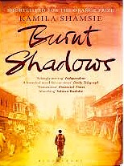

The Burnt Shadows
Fiction
Historical
War
Family Saga
Description
The Burnt Shadows traces the extraordinary life of Hiroko Tanaka, whose world is shattered by the atomic bombing of Nagasaki in 1945. Spanning decades and continents—from Japan to India, Pakistan, and Afghanistan—the novel explores how global events shape personal destinies. Through love, loss, and displacement, Kamila Shamsie weaves a deeply human story that examines memory, identity, and the enduring consequences of war, blending historical depth with emotional resonance.
Book Details
Publisher
Bloomsbury
ISBN
978-0-06-231500-7
Publication Date
June 1, 2016
File Size
8.7 MB (PDF)
Format
PDF, EPUB